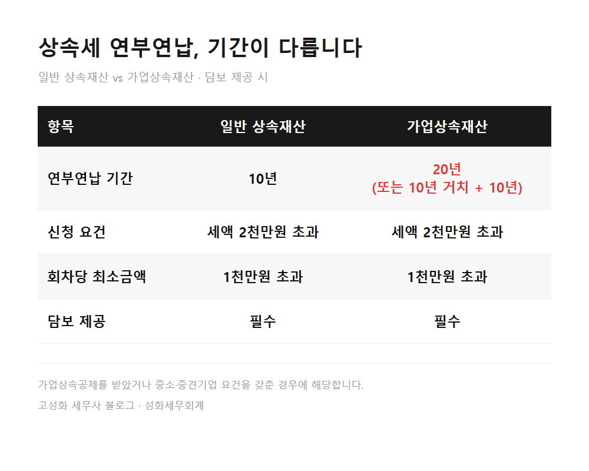
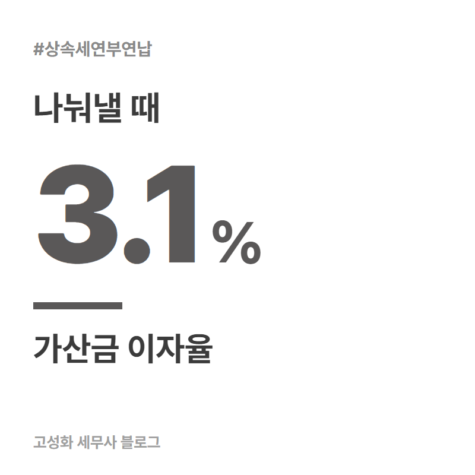
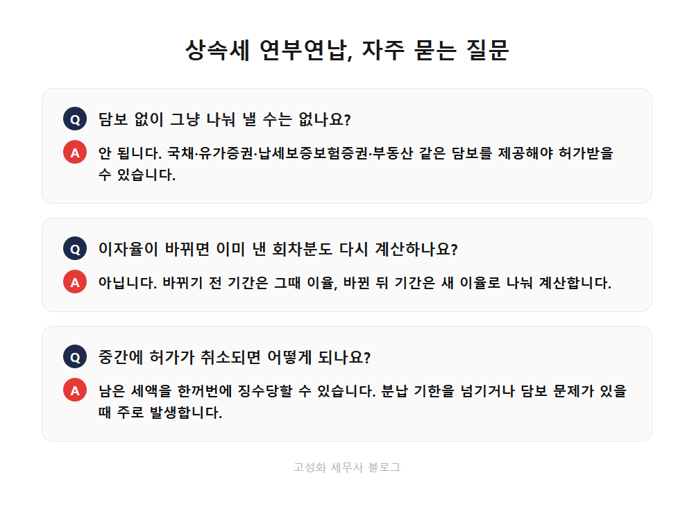

상속세 연부연납 담보 뭘로 내나요, 10년 2편
지난 글에서는 상속세를 땅으로 대신 내는 물납 이야기를 정리해 드렸습니다. 경기도 용인 토지 사례에서 물납은 필지 하나만 인정됐지만, 같은 상속인들이 주택을 담보로 신청한 연부연납은 그대로 승인됐습니다.
현금이 부족해도 세금을 나눠 낼 방법이 물납 말고 하나 더 있다는 뜻입니다.
상담을 하다 보면 연부연납을 "그냥 나눠 내는 것" 정도로 생각하시는 분들을 자주 만납니다. 실제로는 담보를 걸어야 하고, 이자도 따로 붙고, 중간에 못 내면 허가가 취소될 수도 있는 제도입니다.
물납은 재산 자체를 세금 대신 넘기는 방법이고, 연부연납은 재산은 그대로 두고 시간을 버는 방법입니다. 둘 중 뭐가 나은지는 상속받은 재산이 어떻게 구성돼 있는지에 따라 달라집니다.
- 신청 요건은 세금 2천만원과 담보, 두 가지입니다
- 나눠 낼 때마다 이자가 붙습니다, 지금은 연 3.1%
- 허가받았다고 끝이 아닙니다, 취소되는 경우도 있습니다
한눈에 보기



자주 묻는 질문
담보 없이 그냥 나눠 낼 수는 없나요?
안 됩니다. 국채나 유가증권, 납세보증보험증권, 부동산 같은 담보를 제공해야 연부연납이 허가됩니다.
이자율이 바뀌면 이미 낸 회차분도 다시 계산하나요?
아닙니다. 바뀌기 전 기간은 그때 이율로, 바뀐 뒤 기간은 새 이율로 나눠서 계산합니다. 이미 낸 부분을 소급해서 다시 걷지는 않습니다.
중간에 허가가 취소되면 어떻게 되나요?
남은 세액을 한꺼번에 징수당할 수 있습니다. 분납 기한을 넘기거나 담보 관련 명령을 따르지 않은 경우 주로 발생합니다.
정리하면
상속세 연부연납은 세액 2천만원 초과와 담보 제공이라는 조건을 갖추면 신청할 수 있고, 일반 상속재산은 10년, 가업상속재산은 최대 20년까지 나눠 낼 수 있습니다. 다만 회차마다 이자가 붙고, 기한을 어기거나 담보 문제가 생기면 허가가 취소될 수 있다는 점도 함께 알아두셔야 합니다.
지금 맡기고 계신 세무사가 따로 있으시더라도, 연부연납 신청서와 담보 서류만큼은 이 건만 따로 봐드릴 수 있습니다. 담보 종류를 잘못 고르거나 회차 계산을 잘못하면 나중에 취소 사유가 될 수 있어서, 처음 신청할 때 한 번 더 확인하는 게 낫습니다.
상속세를 나눠 낼 방법이 우리 집 상황에 맞는지, 담보로 뭘 쓸 수 있는지부터 편하게 문의 주세요.
본문 전체와 근거 조문은 블로그에서 확인하실 수 있습니다.